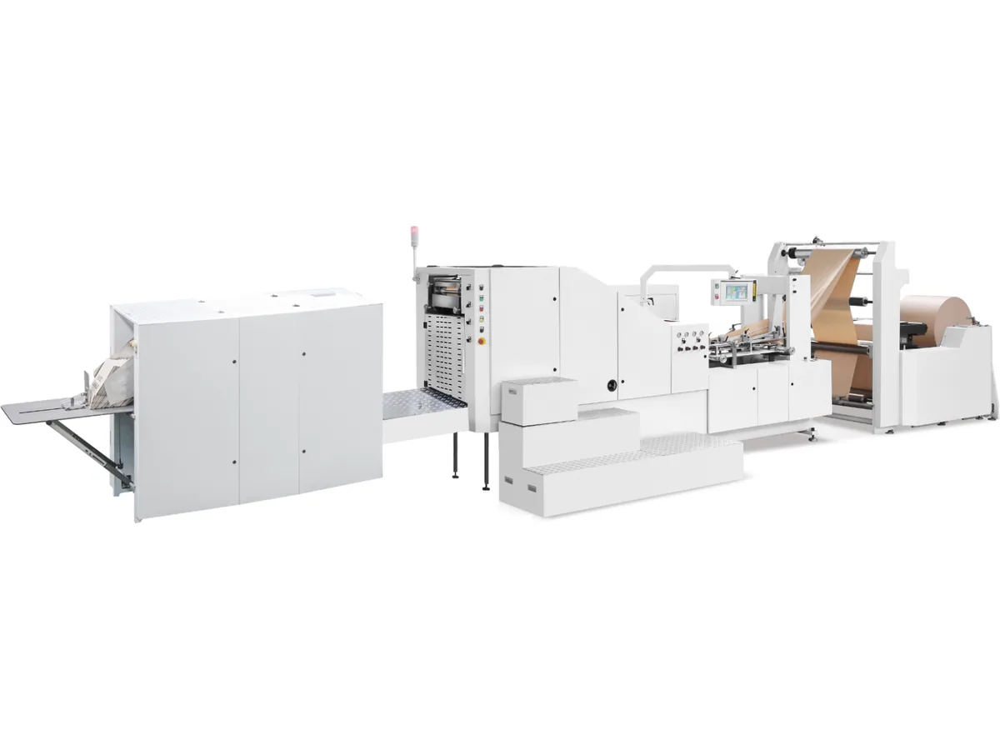
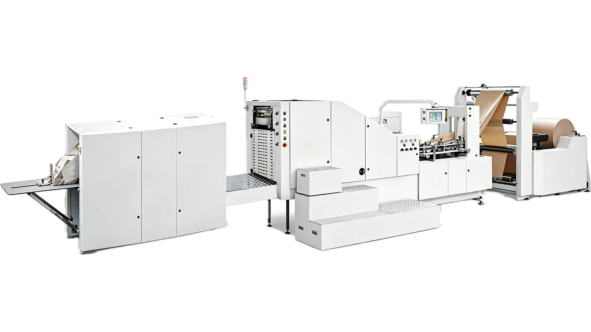
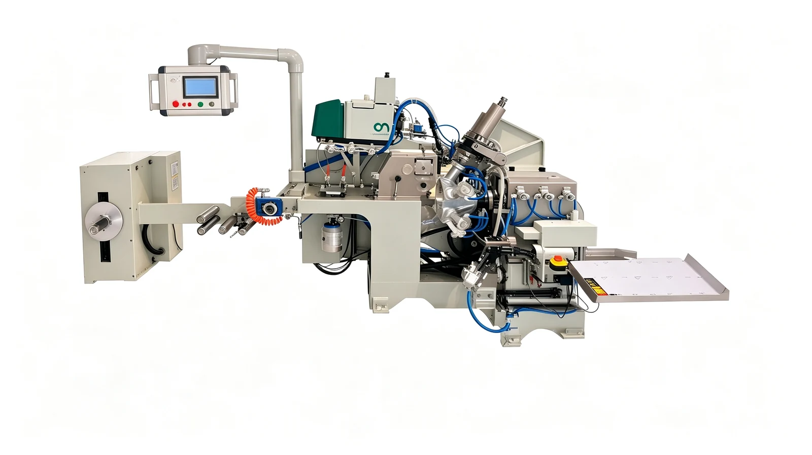

Machine in detail
Bag styles the machine produces and the line seen from the collecting end.


A roll-fed square bottom bag machine. The roll is unwound under constant tension, registered against the print, center-sealed, cut to length, creased and folded at the bottom, glued and stacked — 220 to 450 mm bag width, 30 to 130 bags per minute.

Bag sizes and roll sizes the machine is built around, plus the numbers the plant needs for the layout.
| Bag length | 300–630 mm |
| Bag width | 220–450 mm |
| Bag bottom width | 100–200 mm |
| Paper thickness | 80–150 gsm |
| Machine speed | 30–150 pcs/min |
| Bag making speed | 30–130 pcs/min |
| Paper roll width | 670–1,330 mm |
| Paper roll diameter | up to 1,500 mm |
| Paper core diameter | 76 mm |
| Cutting | Sawtooth knife |
| Bottom sealing | Glued square bottom, folded and pressed |
| Installed power | 17.5 kW, 380 V 3 phase 4 wire |
| Total weight | 10,500 kg |
| Overall dimensions | 11,500 × 3,650 × 1,960 mm |
* Specifications as supplied for this model. Final configuration confirmed on the proforma invoice.
The line runs in one direction from the roll stand to the collection table. Each section is listed as supplied.
Hydraulic roll loading, constant tension
| Roll loading | Hydraulic lift raises the roll to the shaft, no crane needed |
| Tension | Automatic constant tension control on the unwinding shaft |
| Edge control | Automatic web guide keeps the paper edge on the forming line |
| Roll size | Up to 1,500 mm diameter, 76 mm core, 670–1,330 mm width |
| Shaft | Pneumatic expanding shaft for quick roll change |
For pre-printed rolls
| Register | Photoelectric eye reads the printed mark and corrects bag length on the fly |
| Drive | Servo-driven feed, cutting and forming axes |
| Repeat range | Set from the touch screen for each bag size |
| Suitable rolls | Unprinted kraft as well as pre-printed food and retail bags |
Center seal, cut, bottom fold, glue
| Center seal | Water-based adhesive applied along the center seam |
| Cutting | Sawtooth knife cuts the tube to bag length |
| Bottom | Bottom creased, folded and glued into a square bottom |
| Forming | Bag bottom pressed, bag counted and stacked on the collection table |
| Glue system | Adhesive tank with level detection and pressure feed |
Motion controller plus touch screen
| Controller | Motion controller with high-speed bus to the servo drives |
| HMI | Touch screen interface with recipe per bag size |
| Drives | Servo motors on feed, cut and forming axes |
| Cabinet | Air-conditioned electrical cabinet for stable running in hot plants |
| Electrical | 380 V, 3 phase, 4 wire, 17.5 kW |
Supplied by the plant
| Compressed air | 0.5–0.8 MPa |
| Power | 380 V, 3 phase, 4 wire, 17.5 kW |
| Floor | About 11.5 m of line length plus roll loading space |
| Paper | Kraft, food-grade paper, 80–150 gsm |
Bag styles the machine produces and the line seen from the collecting end.

What decides output on a bag line, and how this machine handles it.
The 30 to 130 bags per minute range holds because the register loop corrects bag length while the machine runs, instead of stopping for each printed repeat.
Automatic tension control and a web guide take the variation out of the roll, so cut length stays on size from the first bag of the roll to the last.
The center seal and bottom use water-based adhesive, which keeps the bag recyclable and avoids solvent handling in the plant.
The bottom is creased, folded and pressed into a square, so the finished bag stands up on the shelf and carries the load without a gusset collapse.
Hydraulic roll loading and a pneumatic shaft cut the changeover to minutes, which matters on short runs of several bag sizes.
Where square bottom paper bags are used.
What the plant provides around the bag line.
| Power supply | 380 V, 3 phase, 4 wire |
| Installed power | 17.5 kW |
| Compressed air | 0.5–0.8 MPa, dry |
| Floor | About 11.5 m line length, level floor |
| Paper storage | Rolls up to 1,500 mm diameter, dry store |
| Ambient | Ventilated area, air-conditioned electrical cabinet |
What buyers ask before ordering a bag line.
220 to 450 mm width, 300 to 630 mm length and 100 to 200 mm bottom width. Size changes are set on the touch screen with a mechanical adjustment of the forming plates.
The machine does not print. It runs pre-printed rolls and tracks the printed mark with a photoelectric eye, so the printed design lands in the same place on every bag.
80 to 150 gsm kraft or food-grade paper, in rolls 670 to 1,330 mm wide with a 76 mm core.
30 to 130 bags per minute depending on bag size and paper weight. The upper end of the range is reached on small bags in light paper.
Machines that complete a paper converting shop.

Forms paper cups from printed board on the same line concept.

Makes the lids that go with the cups.

Counts and bags the finished cups for shipment.
Tell us the bag width, length, bottom size and paper grade and we will confirm the forming plates and the output rate.